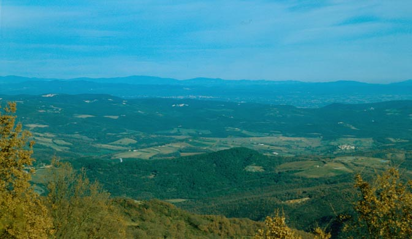

programozási nyelv a számítástechnikában használt olyan, ember által is értelmezhető utasítások sorozata, amivel közvetlenül, vagy közvetve (például: gépi kódra fordítás után) közölhetjük a számítógéppel egy adott feladat elvégzésének módját.
Ismerd meg a vidéket!